如图所示，足够长平行光滑金属导轨水平放置，导轨间距为，左端连接一阻值为的电阻．导轨所在空间存在竖直向下的匀强磁场，磁感应强度为B．导体棒MN置于导轨上，其质量为，电阻为，长度恰好等于导轨间距，与导轨接触良好．不计导轨的电阻、导体棒与导轨间的摩擦．
（1）在水平拉力作用下，导体棒沿导轨向右匀速运动，速度大小为．
a.判断MN哪端电势高；
b.请根据法拉第电磁感应定律的表达式，推导导体棒匀速运动时产生的感应电动势．
（2）导体棒在做切割磁感线的运动时相当于一个电源，该电源的非静电力是什么？在图1中画出非静电力，并根据电动势的定义，推导金属棒MN中的感应电动势．（可认为导体棒中的自由电荷为正电荷）
（3）若在某时刻撤去拉力，导体棒开始做减速运动，并最终停在导轨上．a.以向右为正方向，在图2和图3中定性画出撤去拉力后导体棒运动的速度—时间图像和位移—时间图像；b.求导体棒减速运动过程中导体棒上消耗的电能．
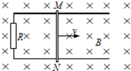
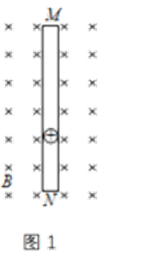
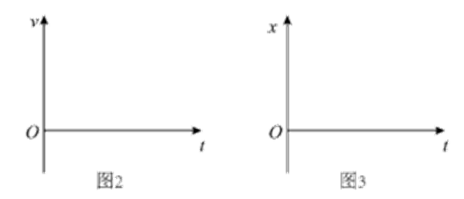


没有助手的悲剧
在法拉第发现电磁感应现象的6年之前，另一位瑞士年轻的科学家科拉顿（J.D.Colladon，1802—1892）于1825年（时年23岁）也做过了类似的实验。
科拉顿把一块磁铁插入用导线绕成圆筒状的线圈中，认为这样或许能产生电流。于是他把一只灵敏电流计与线圈相连，为了防止磁铁对灵敏电流计的影响，他用了很长的导线把灵敏电流计接好后，放在另一个房间里。
由于他没有助手，他只好把磁铁插入线圈后，并让磁铁停留在磁铁中，然后迅速地跑向另一个房间观察灵敏电流计的是否偏转，他看到的结果是灵敏电流计的指针仍停留在零刻度处。他再回到有线圈的那个房间，把磁铁抽出来并放好，再跑到另一个房间里去看灵敏电流计，结果是仍没有看到灵敏电流计的偏转。
就这样，科拉顿与电磁感应现象的发现擦肩而过。如果当时科拉顿能有一个助手帮助他，或者他能设计出一个更好的实验方案，也许他就能成为电磁感应现象的发现者。
看如下问题，导体杆在磁场中平动，我们考察一下其内的电子所受的洛伦兹力如何：
思路：求出一般情况下载流子受到的垂直于杆方向的洛伦兹力，然后乘以载流子数量即可．
证明：
由洛伦兹力公式：
它的
结合电流微观式：
得到：
这与安培力的表达式相同，此即说明，电子所受洛伦兹力垂直于杆的分量构成了安培力．
思路：洛伦兹力沿杆的分量不是静电力，会产生电动势，用电动势的定义求出电动势即可．
证明：
沿杆方向的洛伦兹力分量大小：
这个力不是静电力，所以它将产生电动势，由电动势定义，得：
这与动生电动势的表达式相同，此即说明，电子所受洛伦兹力沿杆方向的分量构成了动生电动势．
额外推论：安培力做的功=对应的动生电动势做功的负值．
证明（应用上面结论）：
另一个证明（公式法）：
考虑安培力与动生电动势的功率：
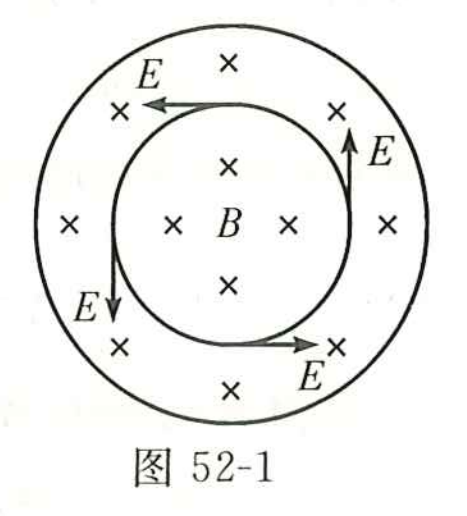
麦克斯韦电磁场理论表明，变化的磁场在周围空间会激发出感生电场．假如有一个局限在圆柱形范围内的匀强磁场因磁场的变化而产生的电动势叫感生电动势，计算导体的感生电动势有两种方法，一种是由电动势定义，对感生电场沿所取路径积分
因为
【学而思改编题】麦克斯韦系统地总结了人类直至
如图1所示，半径为
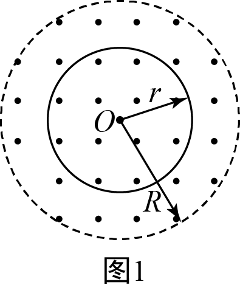
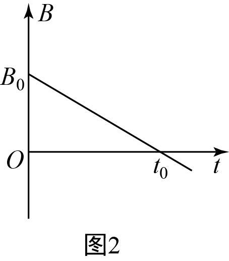
求在
求在
金属环中的自由电荷在涡旋电场的作用下做定向运动，形成了感应电流．请你据此判断金属圆环中自由电子所受涡旋电场力的方向，以及涡旋电场的方向，并画图说明．
变化的磁场产生的涡旋电场存在于磁场内外的广阔空间中，在与磁场垂直的平面内其电场线是一系列同心圆，圆心与磁场区域的中心重合．在同一圆周上，涡旋电场的电场强度大小处处相等．使得金属圆环内产生感生电动势的非静电力是涡旋电场对自由电荷的作用力，这个力称为涡旋电场力，其与电场强度的关系和静电力与电场强度的关系相同．请推导金属圆环位置的涡旋电场的场强大小
在图1中以圆心
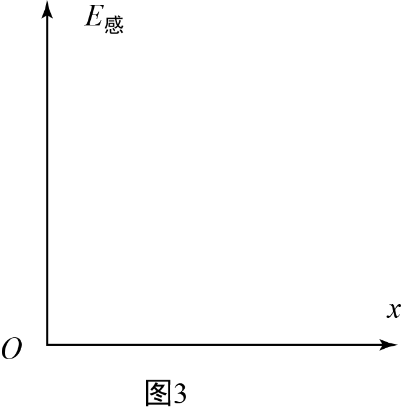
如图甲所示，半径为
在该过程中，金属环内会产生感应电流，其根本原因是环内产生了感应电动势，求该感应电动势
麦克斯韦电磁理论认为：变化的磁场会在空间激发一种电场，该电场与静电场不同，称为感生电场或涡旋电场，图甲所示的磁场会在空间产生如图乙所示的圆形涡旋电场，涡旋电场的电场线与金属环是同心圆．金属环中的自由电荷在涡旋电场的作用下做定向运动，形成了感应电流，涡旋电场力
请根据上面这段文字材料中对感生电动势的定义，推导证明：金属环上某点的感生电场的场强大小为
我们都知道，在静电场中可以定义任意两点间的电势差，但在涡旋电场中却无法对这一概念进行定义，试利用涡旋电场力做功的特点，举例并说明其原因．
经典物理学认为，金属的电阻源于定向运动的自由电子与金属离子（即金属原子失去电子后剩余的部分）的碰撞，在考虑大量自由电子的统计结果时，电子与金属离子的碰撞结果可视为导体对电子有连续的阻力，其大小可表示为
请你基于上面这段材料和已知的条件，给出一个合理的自由电子的运动模型，并在此基础上求出金属环中的感应电流
宏观规律与微观过程往往是相互联系的，若该金属单位体积内的自由电子数为
如图所示，在圆柱形区域内存在竖直向上的匀强磁场，磁感应强度B随时间t变化规律为（其中与k是正的常数）。在此区域内固定一内壁光滑、水平放置的半径为R的细玻璃管，将一带正电的小球在管内由静止释放。已知小球所带电荷量为q。若在此空间不考虑小球运动过程中产生的磁场，下列说法正确的是（ ）
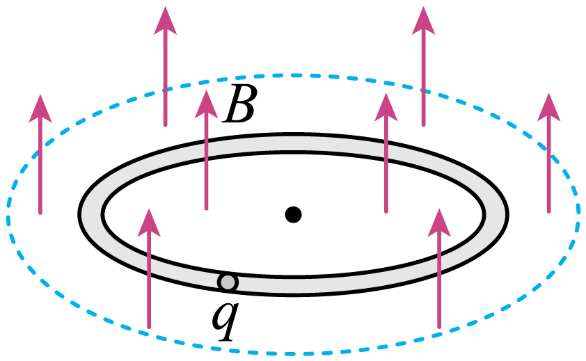
如图所示，在圆柱形区域内存在竖直向上的匀强磁场，磁感应强度的大小B随时间t的变化关系为，其中、k为正的常数在此区域的水平面内固定一个半径为r的圆环形内壁光滑的细玻璃管，将一电荷量为q的带正电小球在管内由静止释放，不考虑带电小球在运动过程中产生的磁场，则下列说法正确的是
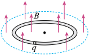
电子感应加速器是利用感应电场来加速电子的一种设备．电子感应加速器主要由上、下电磁铁磁极和环形真空室组成，当电磁铁通以变化的电流时，会在柱形电磁铁的两极间产生磁场，在磁场中安置一个环形真空管道作为电子运行的轨道，如图所示（图中上部分为主视图、下部分为俯视图）．当磁场发生变化时，产生的感应电场就会不断加速电子，电子在真空管中沿逆时针方向做圆周运动．下列说法正确的是
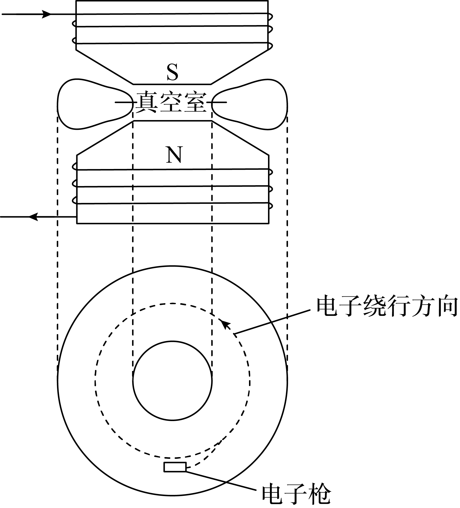
感生电场的方向为顺时针方向
感生电场的方向为逆时针方向
电磁铁中通入的电流应越来越强
电磁铁中通入的电流应越来越弱
现代科学研究中常要用到高速电子，电子感应加速器就是利用感生电场使电子加速的设备．它的基本原理如图甲所示，上、下为电磁体的两个磁极，磁极之间有一个环形真空室．图乙为真空室的俯视图，电子在真空室中做圆周运动．电磁体线圈中电流可以变化，产生感生电场使电子加速．某时刻电磁体线圈中电流如图所示，电子逆时针方向运动．下列说法中正确的是（ ）
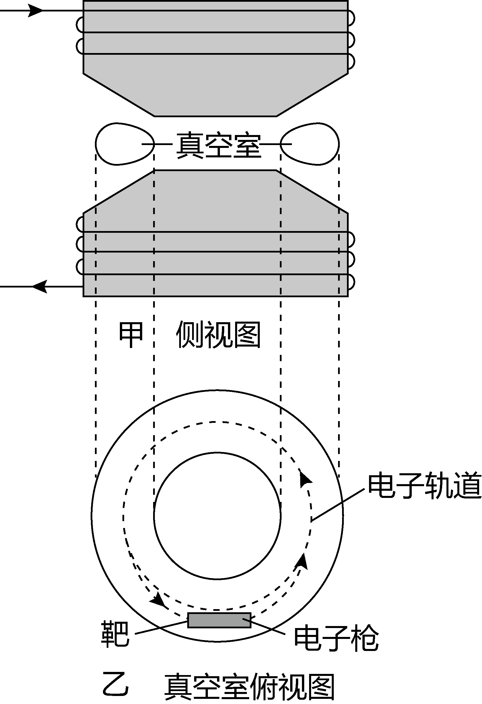
此时真空室中磁场方向由上向下
感生电场对电子的作用力给电子提供向心力
电子做圆周运动的向心加速度大小始终不变
为使电子加速，图中电流应该由小变大
电磁感应现象中产生的感应电动势，由于产生原因不同可分为感生电动势和动生电动势。如果感应电动势是由于导体运动而产生的，叫动生电动势；如果感应电动势是由感生电场产生的，叫感生电动势。以下是关于两类电动势的相关问题：
（1）如图1所示，固定于水平面上的金属框架abcd，处在竖直向下的匀强磁场中。金属棒MN沿框架以速度v向右做匀速运动。框架的ab与dc平行，MN的长度为l，在运动过程中MN始终与bc平行，且与框架保持良好接触，磁场的磁感应强度为B。在上述情景中，金属棒MN相当于一个电源，这时的非静电力与棒中自由电子所受洛伦兹力有关。请分别根据电动势的定义及法拉第电磁感应定律，从不同角度用两种方法证明金属棒MN中的感应电动势。
（2）空间存在有一圆柱形的匀强磁场区域，其横截面如图2所示，磁感应强度随时间按照图3所示的规律均匀变化。图中和为已知量。
a．用电阻为R的细导线做成半径为r的圆环（图中未画出），圆环平面垂直于该磁场，圆环的中心与磁场中心重合。圆环半径小于该磁场的横截面半径。求时圆环中的电流。
b．上述导体圆环中产生的电流，实际是导体中的自由电荷在感生电场力的作用下做定向运动形成的，而且自由电荷受到感生电场力的大小可以根据电动势的定义和法拉第电磁感应定律推导出来。现将导体圆环替换成一个用绝缘细管做成的半径为r的封闭圆形管道，且圆形管道的中心与磁场区域的中心重合（如图4所示）。管道内有一小球，小球质量为m，带电量为＋q。忽略小球的重力和一切阻力。t＝0时小球静止。求时感生电场的电场强度及管道对小球的弹力大小。
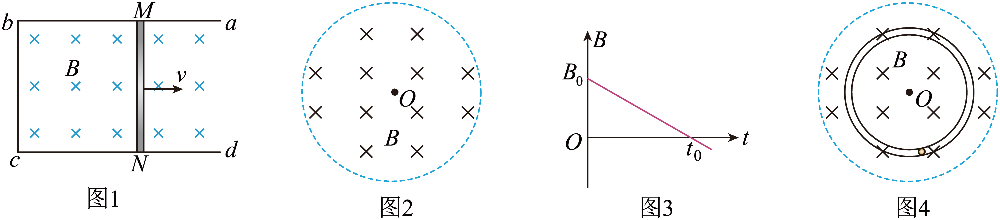
如图甲是法拉第圆盘发电机的实物图，图乙是其原理图。由图乙可知，法拉第圆盘发电机的铜盘安装在水平转轴上，铜盘中心与转轴重合，它的盘面全部处在一个磁感应强度为B的匀强磁场之中。两块铜刷C、D分别与转轴和铜盘边缘接触。用外力驱动铜盘转动时，闭合开关S，电阻R上就有持续的电流通过。
（1）当圆盘按图乙所示的方向转动时，通过电阻R的电流方向如何？
（2）已知圆盘的半径为a，圆盘匀速转动的角速度为ω。求这台发电机的电动势是多少？
（3）电源是通过非静电力做功把其他形式的能转化为电能的装置。请简要说明：法拉第圆盘匀速转动时产生电动势的非静电力是什么力？是如何实现能量转化的？
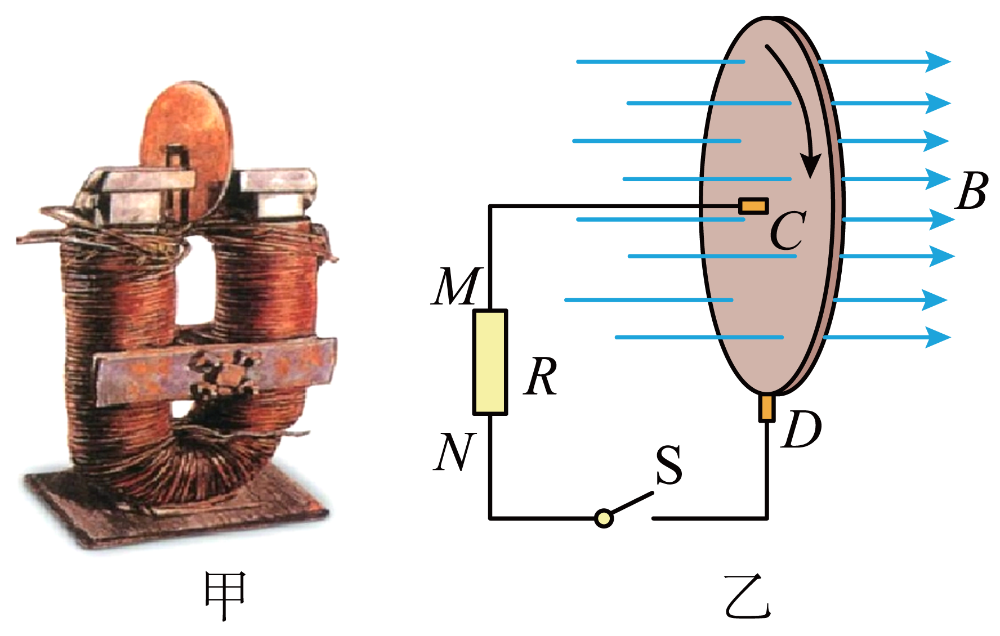
电源是通过非静电力做功把其它形式的能转化为电势能的装置，在不同的电源中，非静电力做功的本领也不相同，物理学中用电动势来表明电源的这种特性．如图所示，固定于水平面的U形金属框架处于竖直向下的匀强磁场中，磁感应强度为B，金属框两平行导轨间距为L，金属棒ab在外力的作用下，沿框架以速度v向右做匀速直线运动，运动过程中金属棒始终垂直于两平行导轨并接触良好．已知电子的电荷量为e，金属棒ab的长度为L．
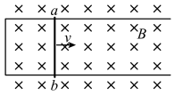
请根据法拉第电磁感应定律，推导金属棒ab切割磁感应线产生的感应电动势E；
在金属棒产生电动势的过程中，请说明是什么力充当非静电力，并求出这个非静电力所做的功W的大小；
设单位时间内有N个电子从a端运动到b端，求电源的电功率P的大小．
如图所示，足够长平行光滑金属导轨水平放置，导轨间距为，左端连接一阻值为的电阻．导轨所在空间存在竖直向下的匀强磁场，磁感应强度为B．导体棒MN置于导轨上，其质量为，电阻为，长度恰好等于导轨间距，与导轨接触良好．不计导轨的电阻、导体棒与导轨间的摩擦．
（1）在水平拉力作用下，导体棒沿导轨向右匀速运动，速度大小为．
a.判断MN哪端电势高；
b.请根据法拉第电磁感应定律的表达式，推导导体棒匀速运动时产生的感应电动势．
（2）导体棒在做切割磁感线的运动时相当于一个电源，该电源的非静电力是什么？在图1中画出非静电力，并根据电动势的定义，推导金属棒MN中的感应电动势．（可认为导体棒中的自由电荷为正电荷）
（3）若在某时刻撤去拉力，导体棒开始做减速运动，并最终停在导轨上．a.以向右为正方向，在图2和图3中定性画出撤去拉力后导体棒运动的速度—时间图像和位移—时间图像；b.求导体棒减速运动过程中导体棒上消耗的电能．



如图所示，在磁感应强度为
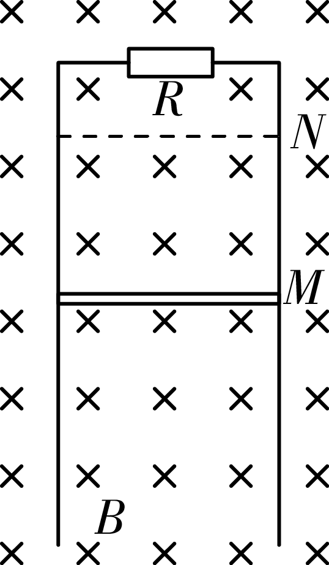
电阻
金属棒运动的时间。
经典物理学认为，金属的电阻源于定向运动的自由电子与金属离子的碰撞。已知元电荷为
如图甲所示为法拉第发明的圆盘发电机，图乙是其原理示意图，其中的铜质圆盘安装在水平的铜轴上，铜质圆盘的圆心与铜轴重合，它的边缘正好在两磁极之间，两块铜片
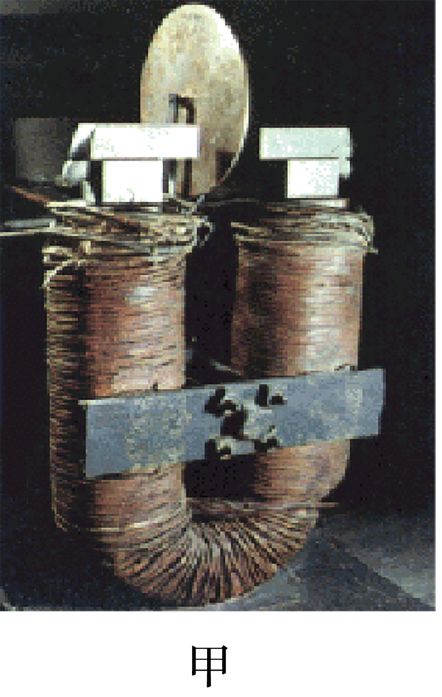
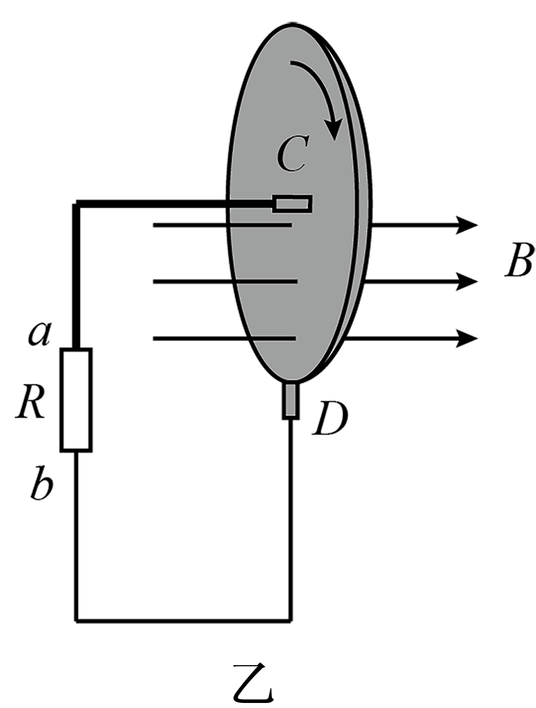
圆盘转动方向如图乙所示，求通过电阻
若各接触点及转轴的摩擦均可忽略不计，圆盘匀速转动一圈，外力需要做多少功．
圆盘匀速转动时，圆盘简化的导体棒的内部电子因棒转动而在匀强磁场中受沿棒方向的洛伦兹力的分力，其大小
法拉第做出了关于电磁场的关键性突破，发现了电磁感应现象，永远改变了人类文明．
在下列一些常用家用电器的使用过程中，应用电磁感应原理的是（ ）
电吹风机
电磁炉
电热毯
电烤箱
如图所示，面积为的匝线圈处在匀强磁场中，磁场方向垂直于线圈平面，已知磁感应强度随时间变化的规律为，定值电阻，线圈总电阻，则回路中电流的大小为 ，、两点间的电势差 ．
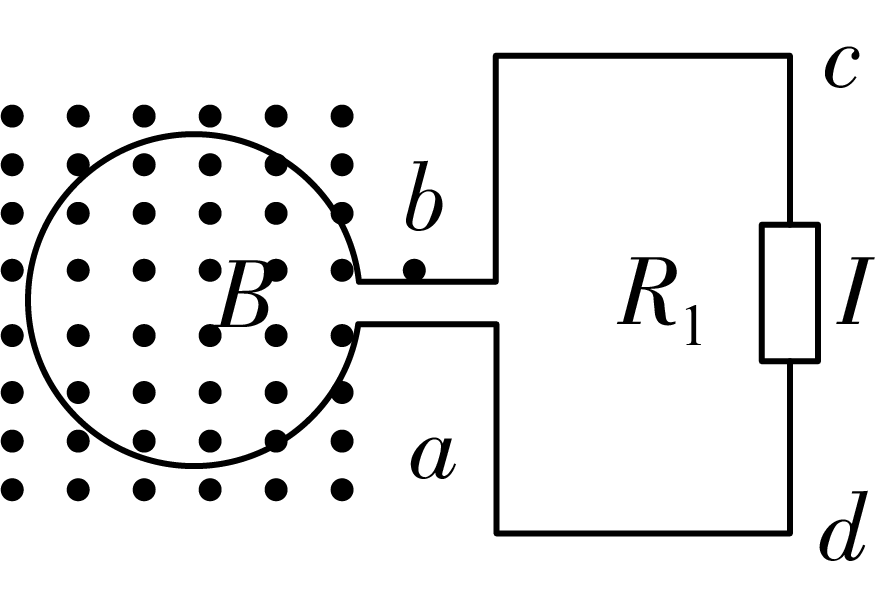
电磁炉是目前家庭常用的炊具，由线圈盘、陶瓷面板等部件组成，下列说法正确的是（ ）
电磁炉是陶瓷面板发热来加热食物的
电磁炉可以用陶瓷材料的锅来加热食物
锅底越是靠近陶瓷面板，锅的加热效果就越好
电磁炉加热食物时线圈盘中通有恒定电流
小李同学用图中两个电路研究通电自感和断电自感现象．图中是一带铁芯的线圈，直流电阻忽略不计，、是额定电压为的灯泡，直流电源为一节新的干电池．请根据左侧栏对电键的实验操作，判断出右侧栏中能观察到的小灯泡的现象，并在左侧栏内的空格内填入相匹配的现象前的字母：
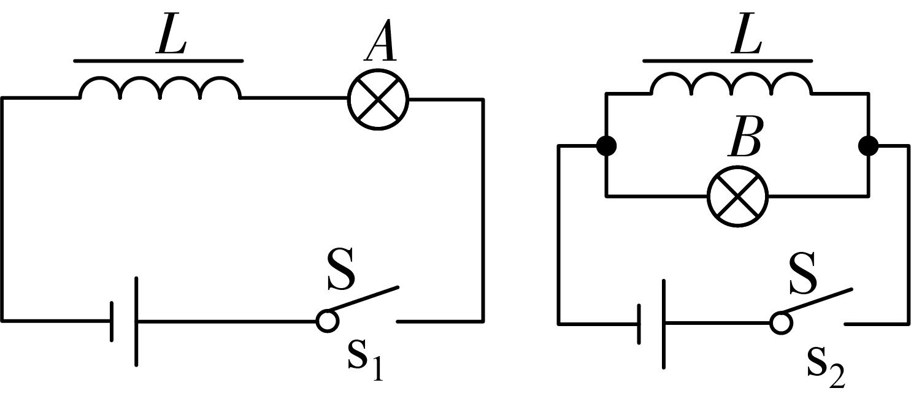
对电键的操作：
（1）电键由断开到闭合 （2）电键由闭合到断开 （3）电键由断开到闭合 （4）电键由闭合到断开
实验过程中可能会观察到灯泡的现象：
A．慢慢变亮，然后亮度不变
B．立即变亮，然后亮度不变
C．立即变亮，然后慢慢熄灭
D．稍微变暗，然后亮度不变
E．立即熄灭
F．闪亮一下，然后熄灭
如图所示，一根有裂缝的空心铝管竖直放置．让一枚磁性比较强的永磁体从管口处由静止下落，磁体在管内运动时没有跟铝管内壁发生摩擦．则磁体（ ）
在管内的加速度越来越大
受到铝管中涡流的作用力方向一直向下
受到铝管中涡流的作用力方向一直向上
受到铝管中涡流的作用力方向先向上后向下
如图所示，质量、电阻、长度的导体棒横放在形金属框架上．框架固定在绝缘水平面上，相距的、相互平行，电阻不计且足够长，电阻的垂直于．整个装置处于竖直向上的匀强磁场中，磁感应强度．现垂直于施加的水平恒力，使棒从静止开始无摩擦地运动，棒始终与、保持良好接触．
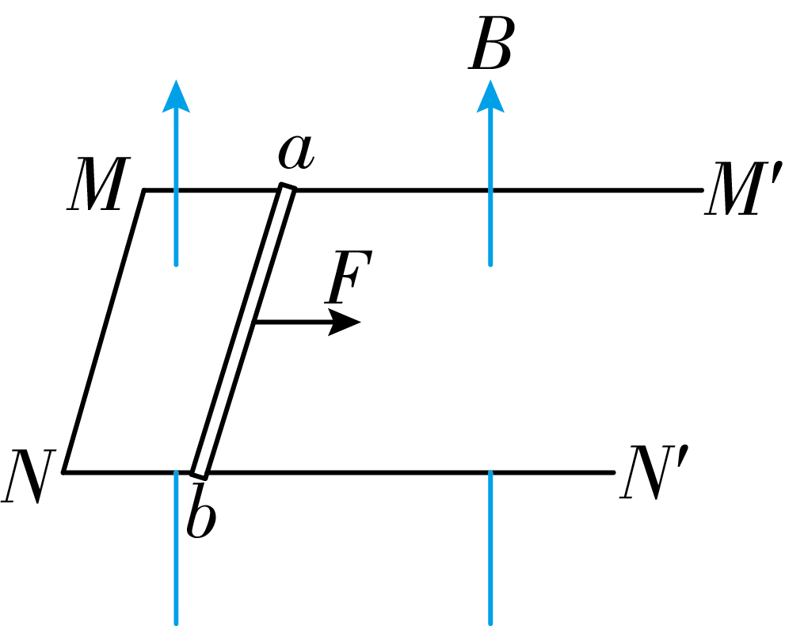
求棒能达到的最大速度．
若棒从静止到刚好达到最大速度的过程中，导体棒上产生的热量，求该过程中棒的位移大小．
居老师用小车探究电磁阻拦的效果如图所示（俯视），在遥控小车底面安装有单匝矩形金属线框（线框与水平地面平行），小车以初速度v0向右通过竖直向下的有界匀强磁场．已知小车总质量m= 0.2 kg，金属框宽为0.1 m，长为0.2 m，电阻R= 2 Ω，磁场宽度D= 0.4 m，磁感应强度B= 1 T，不计摩擦．
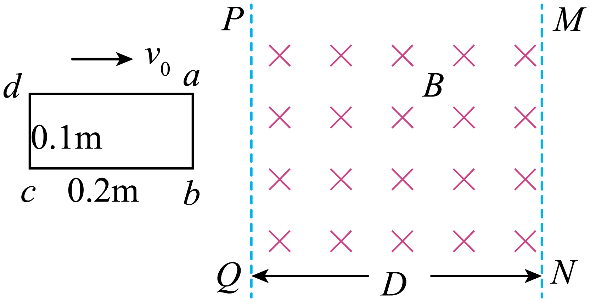
（计算）若v0= 4 m/s，则ab边刚进入磁场时，请计算线框中产生的感应电流大小和小车的加速度大小．
若cd边刚离开磁场边界MN时，小车速度恰好为零．
线框穿过磁场的过程中，感应电流的方向
均为abcda
均为adcba
先abcda再adcba
先adcba再abcda
定性画出小车运动的速度v随时间t变化的关系图像．
（计算）求线框在进入磁场的过程中，通过导线截面的电量q．
（分析）居老师认为“线框进入磁场过程的发热量大于穿出磁场过程的发热量”，请分析并判断该观点是否正确．
居老师发现金属线框在磁场中的运动会产生感应电动势，于是进一步利用如图（a）所示装置验证感应电动势大小与磁通量变化率之间的关系．线圈匝数和面积均不变，通过调节智能电源在线圈a中产生可控的变化的磁场，用磁传感器测量线圈b内的磁感应强度B，用电压传感器测量线圈b内的感应电动势E．
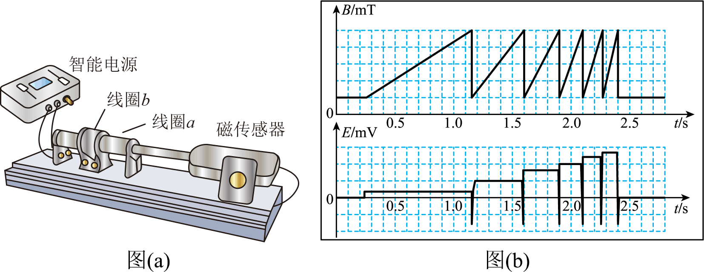
观察图（b）图像，可得：在线圈b中产生恒定感应电动势的条件是 ．
为了进一步确定定量关系，可利用图（b）中的信息，做出
E− ΔB图像
E− ΔΦ图像
法拉第作出了关于电力场的关键性突破，发现了电磁感应现象，永远改变了人类文明．
某同学在做探究电磁感应现象规律的实验中，她先将灵敏电流计G连接在图甲所示的电路中，电流计的指针如图甲中所示．
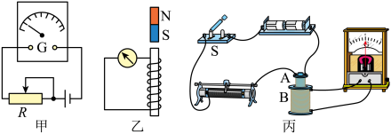
该同学将灵敏电流计G与一螺线管串联，如图乙所示．通过分析可知图乙中的条形磁铁的运动情况是 （选涂“A：向上拔出”、“B：向下插入”）．
该同学将灵敏电流计G接入图丙所示的电路．出于保护电路的目的，在闭合电键S前，滑动片P应置于滑动变阻器的 （选涂：“A：最左端”、“B：中间”或“C：最右端”）．
此时电路已经连接好，A线圈已插入B线圈中，请问灵敏电流计中电流方向与螺线管B中导线的绕向 （选涂“A：有”、“B：没有”）关系．
她合上开关后，灵敏电流计的指针向右偏了一下，若要使灵敏电流计的指针向左偏转，可采取的操作是 （填正确选项前的学母）
断开开关
在A线圈中插入铁芯
变阻器的滑片向右滑动
变阻器的滑片向左滑动
将相同灵敏电流计G1和G2的对应接线柱相连接．将G1表的指针从中间用力向左拨动、发生偏转，此时静止的G2表指针偏转．对这一现象的分析正确的是（ ）
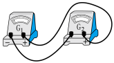
两表都是“发电机
G1表是“发电机”，G2表是“电动机”
两表都是“电动机
G1表是“电动机”，G2表是“发电机”
小王同学根据感应电流产生的条件，想利用摇绳发电．如图乙所示，把一条大约10m长电线的两端连在一个灵敏电流计的两个接线柱上，形成闭合导体回路．两个同学沿 （选涂“A：”、“B：南北”）方向站立并迅速摇动这条电线时，发电的可能性比较大．
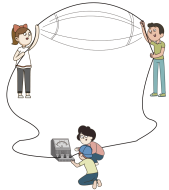
某同学想应用楞次定律判断线圈缠绕方向，设计的实验装置原理图如图甲所示，把二极管、线圈按如图甲所示电路用导线连接成实验电路；发现条形磁铁插入线圈时，二极管B发光；拔出时，二极管A发光；
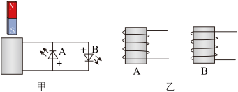
线圈缠绕方向如图乙中的 （选涂“A”或“B”）．
条形磁铁运动越快，二极管发光的亮度就越大，这说明感应电动势随 （选涂“A：磁通量”、“B：磁通量甲的变化量”、“C：磁通量的变化率”）的增大而增大．
为进一步研究，他又做了以下实验：磁体从靠近线圈的上方静止下落．在磁体穿过整个线圈的过程中，电流传感器显示的电流i随时间t的图像应该是下图中
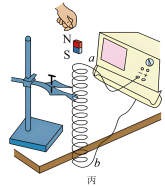
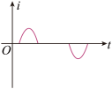
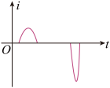
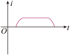
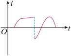
某同学对教材中断电自感实验做了如下改动．在两条支路上分别串联电流传感器，再按教材要求，断开电路并记录下两支路的电流情况如图所示，由图可知：
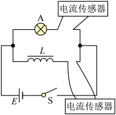
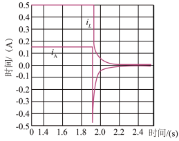
断电瞬间，灯泡电流瞬间 （选涂“A：增大”、“B：减小”、“C：不变”）
断电瞬间，灯泡中电流与断开前方向 ；（选涂“A：相同”、“B：相反”）
在不改变线圈电阻等其他条件的情况下，只将铁芯拔出后重做上述实验，可观察到灯泡在断电后处于亮着的时间将 ．（选涂“A：变长”、“B：变短”、“C：不变”）
如图所示，面积为0.2m2的200匝线圈处在匀强磁场中，磁场方向垂直于线圈平面，已知磁感应强度随时间变化的规律为，定值电阻R1=6Ω，线圈总电阻R2=4Ω，则电流表的示数为 A，a、b两点间的电势差Uab= V．
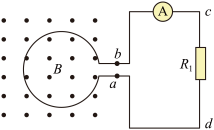
地球的磁场
地球可以看作一个天然的大磁体．地磁场对人类的生存和活动都有着重要意义，如利用它为航海、行军导航，利用地磁场的分布特征寻找矿藏等．
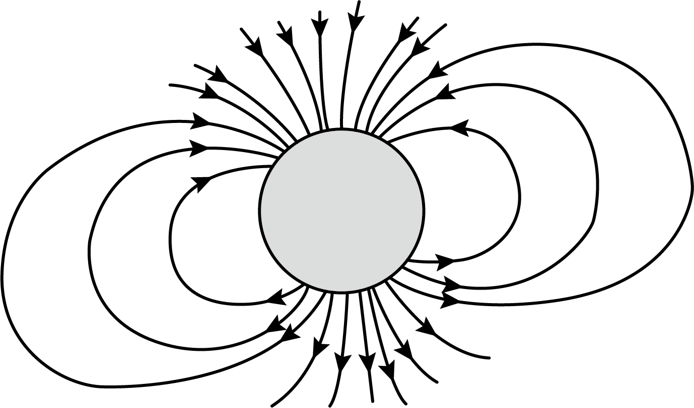
以下关于地磁场的说法正确的是（ ）
地理南极与地磁场南极重合
地磁场的磁感线不是闭合的曲线
在赤道上小磁针的极在静止时指向地理的南方
地球表面任意位置的地磁场方向都与地面平行
我国古代有人曾经对自然现象进行观察和研究，留下了许多关于地磁场的记载．根据古籍记载，司南静止时“其柢（握柄）指南”，学术界于年想象出司南的模样并印刷在邮票上（如图），司南的握柄应该为该磁体的 （选填“”或“”）极．
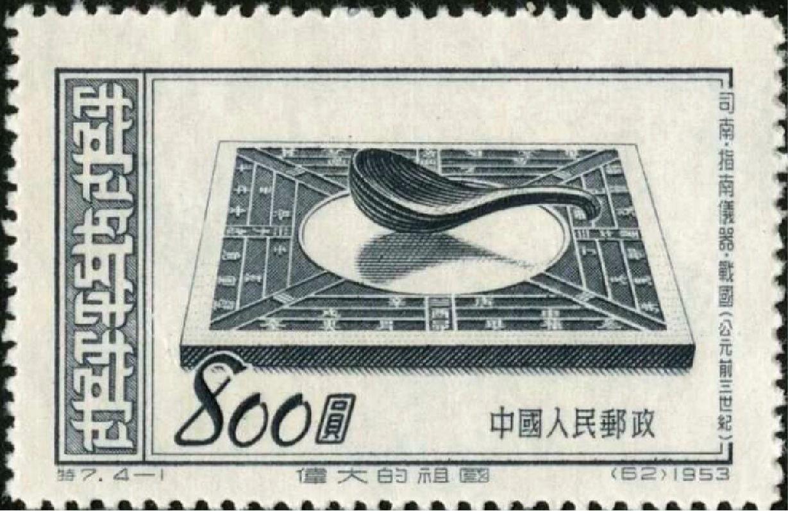
来自太阳和其他星体的宇宙射线中含有大量高能带电粒子，若这些粒子都直接到达地面，将危害地球上的生命．但由于地磁场（如图）的存在改变了宇宙射线中带电粒子的运动方向，使得很多高能带电粒子不能到达地面．若不考虑地磁偏角的影响，则当高能带电粒子带正电且沿地球赤道平面射向地心时，由于地磁场的作用将向 （选填“东”“南”“西”或“北”）偏转．
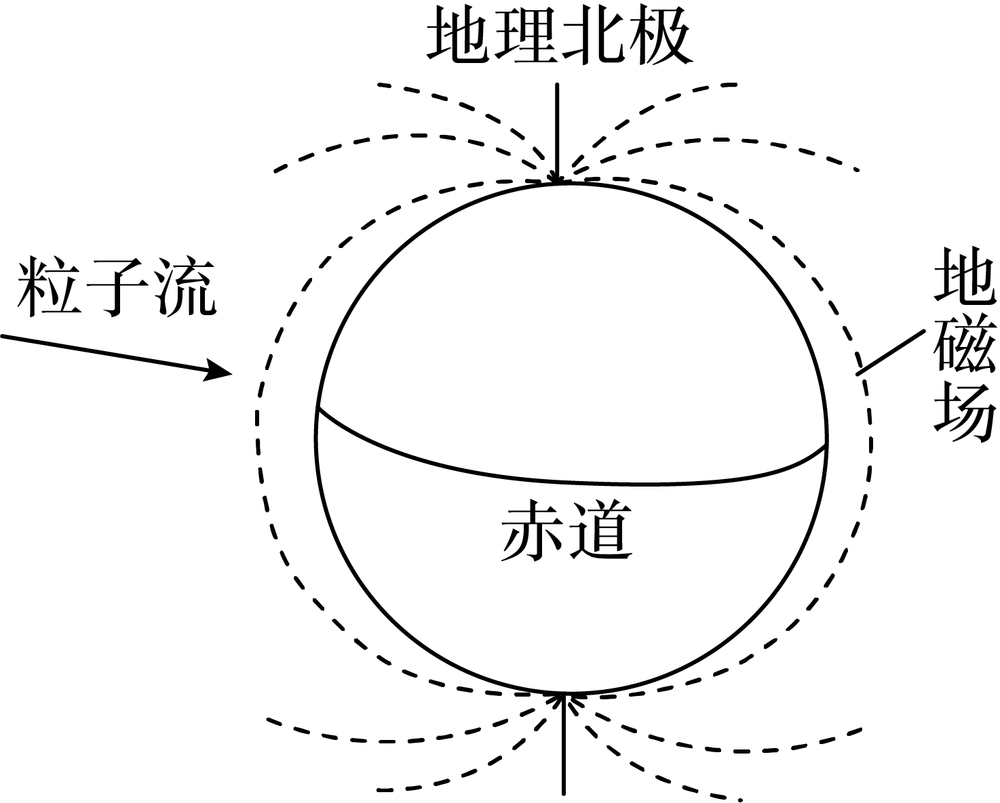
据测量，地球表面某处地磁场的磁感应强度水平分量为．
（用国际单位制基本单位表示）；
一根硬直金属导体的单位长度质量为．导体被放置在该处一个水平的桌面上，某同学尝试使其通电离开桌面．取．该同学把导体沿着东西方向放置在桌面上，计算所需要最小电流的大小 ，方向 （选填“由西指向东”或“由东指向西”）．
若该处有半径为并绕制了匝的闭合线圈竖直放置且与地磁场方向垂直，如图所示，当该线圈绕其竖直直径转动过程中，线圈内 （选填“有”或“无”）感应电流；若微电流传感器显示的是感应电流瞬时值，从开始转动到时读数 （选填“最小”或“最大”）．
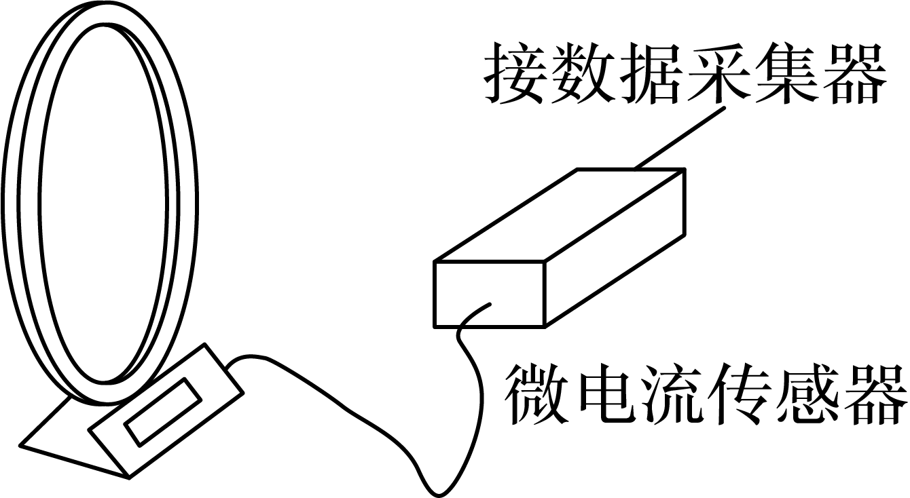
朝南的钢窗原来关着，今将它突然朝外推开，转过一个小于的角度，考虑到地球磁场的影响，则钢窗活动的一条边中（右边） ．
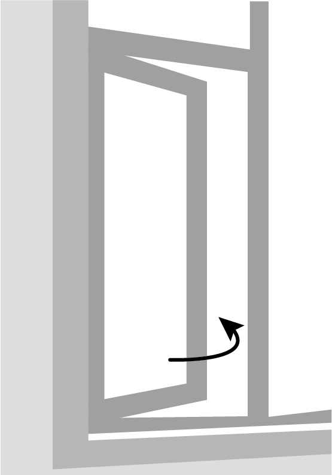
有自下而上的微弱电流
有自上而下的微弱电流
有微弱电流，方向是先自上而下，后自下而上
有微弱电流，方向是先自下而上，后自上而下
在北半球地磁场的竖直分量向下大小为．飞机在我国上空匀速巡航，机翼保持水平，飞行高度不变．由于地磁场的作用，金属机翼上有电势差．设飞行员左方机翼末端处的电势为，右方机翼末端处的电势为，则（ ）
若飞机从西往东飞，比高
若飞机从东往西飞，比高
若飞机从南往北飞，比高
若飞机从北往南飞，比高
据报道，一法国摄影师拍到“天宫一号”空间站飞过太阳的瞬间．照片中，“天宫一号”的太阳帆板轮廓清晰可见，如图所示，假设“天宫一号”正以速度绕地球做匀速圆周运动，运动方向与太阳帆板两端、的连线垂直，、间的距离，地磁场的磁感应强度垂直于、所在平面的分量
求、间感应电动势的大小；
在太阳帆板上将一只“、”的小灯泡与、相连构成闭合电路，不计太阳帆板和导线的电阻．试判断小灯泡能否发光，并说明理由．
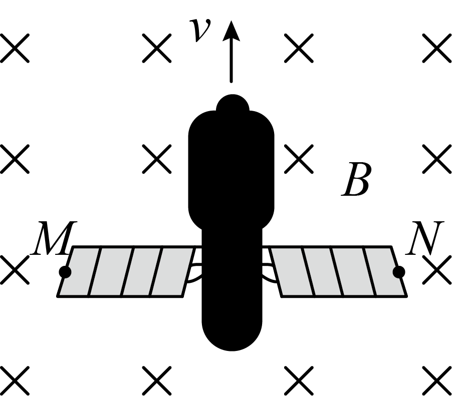
传感器．传感器在日常生活中有着广泛的应用．它可将许多非电、非磁的物理量转变成电学量来进行检测和控制．它的种类多种多样，其性能也各不相同．
现代生活离不开智能手机，手机有很多功能需要传感器来实现．例如当人将手机靠近耳朵接听电话时，手机会自动关闭屏幕从而达到防误触的目的，实现这一功能可能用到的传感器为（ ）
光传感器和位移传感器
磁传感器和温度传感器
磁传感器和声传感器
压力传感器和加速度传感器
飞机着陆后，机场的行李口开始工作．后台工作的示意图如图a所示，其中K为光源，电源电动势，内阻不计．为定值电阻，为光敏电阻（无光照射时阻值大，有光照射时阻值小）．行李随传送带匀速率运动，当行李通过光源K与之间时，射向的光束被挡住．某段时间内，电压传感器的示数U随时间t变化的关系如图b所示．则时刻，与K之间 （选填“有”或“没有”）行李箱；有光照射和无光照射时的功率之比为 ．
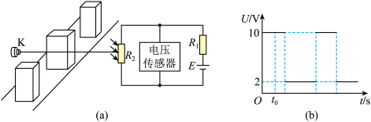
力传感器是一种将力信号转变为电信号的电子元件．图中的金属丝是一种“应变片”，它将金属片在力F作用下的形变转换成电阻的变化．金属丝电阻大小的变化遵循了（ ）
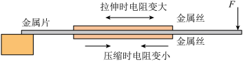
欧姆定律
电阻定律
楞次定律
焦耳定律
某型号霍尔元件的主要部分由一块边长为L、厚度为d的正方形半导体薄片构成，电子的移动方向从SR边进入薄片朝PQ边运动．
当突然垂直PQRS面施加一磁感强度为B方向如图所示的匀强磁场时，电子将
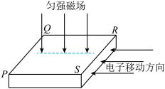
在安培力作用下向PS侧积聚
在洛伦兹力作用下向PS侧积聚
在安培力作用下向QR侧积聚
在洛伦兹力作用下向QR侧积聚
已知在电子积聚一侧的对侧会同时积累等量的正电荷，稳定后在薄片中形成场强为E的匀强电场，该电场中PS与QR边之间的电势差大小为
一、磁场力磁场力包括磁场对其中的磁体、运动电荷和电流的作用力
磁感应强度B的单位T等价于（ ）
下列关于磁场的相关判断和描述正确的是（ ）
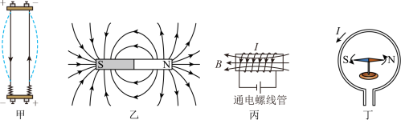
甲图中导线所通电流与受力后导线弯曲的图示符合物理事实
乙图表明条形磁铁的磁感线总是从N极出发，到S极终止
丙图中导线通电后，其产生磁场的磁感应强度的方向符合物理事实
丁图中环形导线通电后，其轴心位置小磁针N极向纸面内旋转符合物理事实
阴极射线管是一种能从其阴极A发射出电子流的装置．如图所示的电子流阴极射线管放在蹄形磁铁的N、S两极间，则此时电子流将（ ）
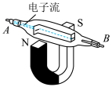
向上偏转
向下偏转
向S极偏转
向N极偏转
如图所示，一块蹄形磁铁放在水平台秤上，金属棒AB固定在两个磁极之间．当AB中通入电流时，台秤示数减小．则AB棒所受安培力的方向为 （选填“向上”或“向下”），电流的方向为 （选填“从A到B”或“从B到A”）．
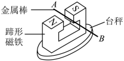
电磁炮的主要结构原理如图所示．假设某电磁炮能把质量的弹体（包括金属杆CD的质量）由静止匀加速到．已知轨道宽、长，通过的电流为，则弹体获得的加速度大小为 ，轨道间所加的匀强磁场的磁应强度 T（轨道摩擦不计）．
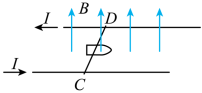
四、太阳风
太阳风是指从太阳辐射出的高能粒子流，由质子和电子等组成．幸亏地球周围存在地磁场，地磁场改变这些带电粒子的运动方向，使其中的大部分不能到达地球，从而保护了地球上的生物．
地磁场的示意图如图所示，下列说法正确的是（ ）
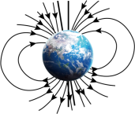
地球的磁感线可以相交
地球的磁感线是闭合的曲线
赤道包围面积的磁通量比同步卫星轨道包围面积的磁通量大
赤道包围面积的磁通比同步卫星轨道包围面积的磁通量小
地磁场使得太阳风发生偏转，而非直射地球，保护了地球上的生命，堪称地球生命的“保护伞”．关于地磁场，下列说法正确的是（ ）
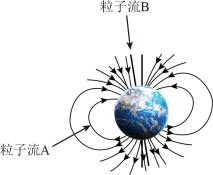
进行奥斯特实验时，通电导线南北放置时实验现象最明显
进行奥斯特实验时，通电导线东西放置时实验现象最明显
地磁场对直射赤道的高能粒子流A的偏转作用比对直射南北极的高能粒子流B的偏转作用强
地磁场对直射赤道的高能粒子流A的偏转作用比对直射南北极高能粒子流B的偏转作用弱
极光是由来自太阳的高能带电粒子流高速冲进高空稀薄大气层时，被地球磁场俘获，从而改变原有运动方向，向两极做螺旋运动而形成的．科学家发现并证实，向两极做螺旋运动的这些高能粒子的旋转半径是不断减小的，这主要与下列哪些因素有关（ ）
洛伦兹力对粒子做负功，使其动能减小
空气阻力做负功，使其动能减小
南、北两极的磁感应强度增强
粒子带电量减小
假设科学家捕获并引导太阳风中的带正电的质子流进入质谱仪．质谱仪的结构如图a所示，它分别由加速器Ⅰ、速度选择器Ⅱ、质量分离器Ⅲ三部分组成．若从粒子源P点发出一个电量q、质量为m的质子，经过加速器和速度选择器后，速度符合一定大小的质子能够通过，缝射入质量分离器中．整个过程中可以不考虑质子重力的影响．
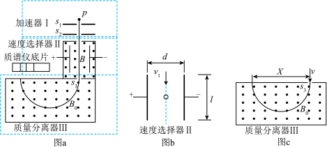
如果质子从速度开始经加速后速度达到，求加速器两极板间电压．
若质子以速度进入速度选择器Ⅱ中，两板间电压为，两板长度l，相距d．在穿过电场过程中，为了不让质子发生偏转，需要加一个垂直于电场和速度平面的磁场．求磁感强度B的大小，并在图b中分别用和标出质子受到的电场力与磁场力方向．
若质子以速度v1垂直于磁场方向进入质量分离器Ⅲ，图c所示其磁感应强度大小为．质子在磁场力作用下做半圆周运动．求质子做圆周运动的直径X．
视频预览